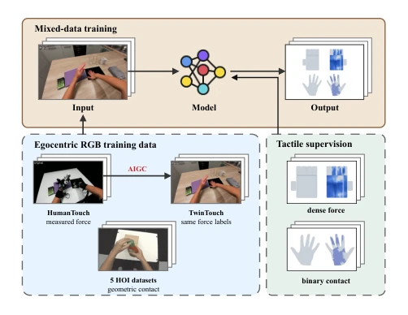
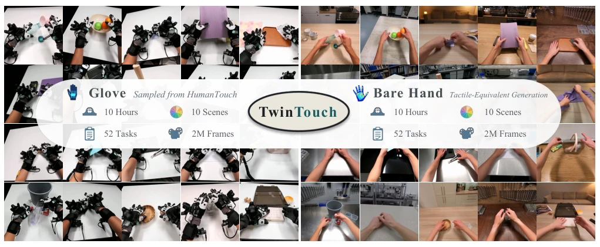
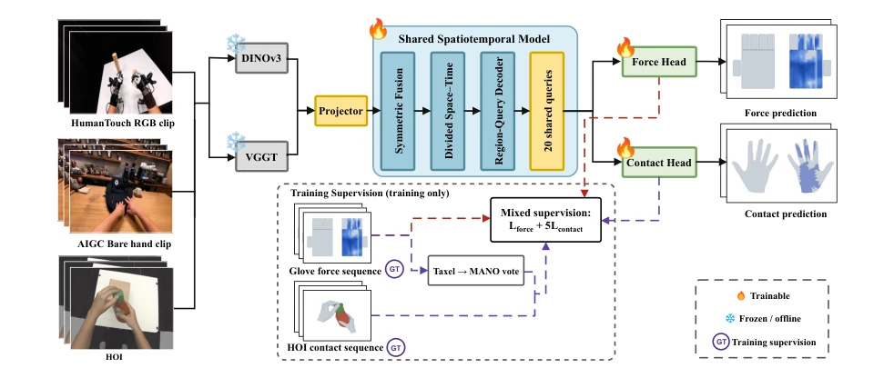
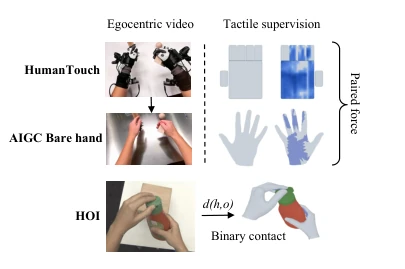
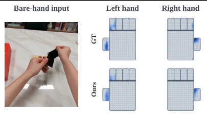
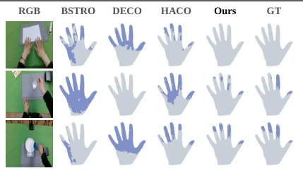
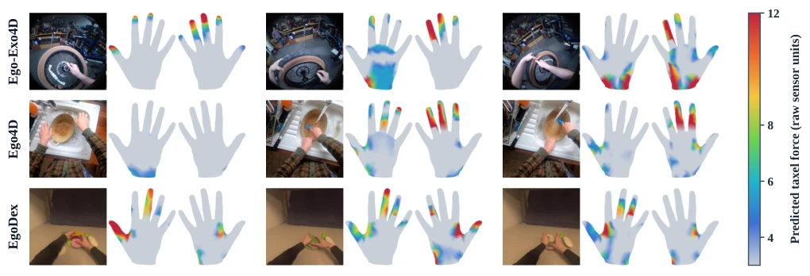
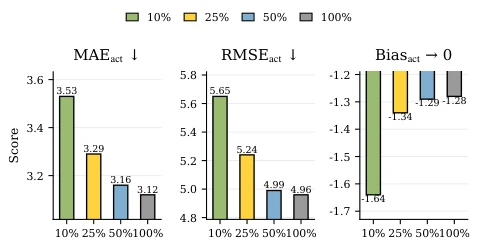
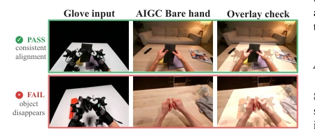

This paper attempts to use "visual magic" to solve the pain point of scarce tactile data, the idea is quite bold. The core is to "re-skin" expensive tactile glove data into bare-hand videos, retaining real force signals while fooling the appearance distribution. Architecturally, it does not use external hand reconstruction, directly decoding force from frozen visual features, saving considerable effort. But honestly, this is essentially "measuring force with gloves, pretending to train on bare hands"; the quality of the generative model directly determines the upper limit. If the generated hand deforms, can the force signal still align? Moreover, although 500 hours of glove data is large, the collection cost remains high, just swapping "collection cost" for "generative computing cost". However, recovering dense force fields in sensor-free videos indeed opens a new avenue for embodied intelligence, at least not needing to cover with sensors to learn grasping.
Tactile signals are crucial for fine manipulation, but acquisition costs are too high. Existing tactile strategy learning is limited by physical sensors; each training sample requires contact with physical sensors on the interface [1]. Although visual learning has scaled, tactile perception cannot expand as easily as vision because full-palm tactile gloves are expensive and fragile [11]. Early work mainly estimated planar surface pressure [4], [5], later extended to egocentric perspectives [6]. Recent research attempts to predict full-palm dense tactile maps [7], [8], [9], but performance upper limits are constrained by the scale of paired training data. Existing datasets pair egocentric videos with dense tactile signals for only a few hours [11], or only millions of samples but labels are binary contact derived from distance rather than measured force [8]. HumanTouch has 500 hours of data, but fixed scenes and glove appearance cause domain gaps [12]. Therefore, it is necessary to bridge the appearance gap and integrate geometric contact supervision without re-collecting force data.

Fig. 1. TouchSight overview. HumanTouch provides measured full-palm force, TwinTouch transfers the same interactions to bare-hand appearances while retaining their force labels, and five public HOI (hand-object interac- tion) datasets add geometric contact supervision. TouchSight fuses frozen semantic and geometric visual features and decodes region queries into dense taxel force and palmar MANO contact. At inference, it requires only monocular egocentric RGB.

Fig. 2. TwinTouch-20H overview. Spanning 52 interaction tasks and 10 scenes with paired bare-hand videos and measured tactile signals.
The overall process of TouchSight is divided into data construction and model architecture. In data, using generative video models to re-render 10 hours of HumanTouch glove videos into bare-hand videos, retaining original force labels, forming TwinTouch-20H paired data, while combining binary contact labels from 5 HOI datasets. In model architecture, input is egocentric RGB clips, not relying on external hand reconstruction. First, frozen DINOv3 and VGGT extract semantic and geometric features respectively, projected via LayerNorm then fused via bidirectional cross-attention, introducing gating mechanism to balance two-stream information. Fused tokens undergo split spatiotemporal attention processing to capture contact dynamics. Decoding stage uses region queries (10 per hand, corresponding to fingers and palm strips), these queries cross-attention to feature grids, and decoded into taxel-level force via FiLM modulation. The same set of queries predicts MANO vertex contact, achieving hybrid supervision. Inference requires only RGB input, no hand pose estimation needed. Loss function uses Huber+L1 regression for force, binary contact uses BCE.

Fig. 4. TouchSight architecture. Frozen DINOv3 and VGGT features undergo symmetric fusion, space–time attention, and region-query decoding. Shared queries predict bimanual taxel force and MANO contact; inference uses RGB only.

Fig. 5. TouchSight’s three supervision sources: measured glove force, paired bare-hand force, and geometry-derived HOI contact.
Experiments evaluated force prediction, bare-hand generalization, and binary contact prediction. On HumanTouch native space, removing VGGT or temporal modules both led to performance degradation, proving importance of geometric and temporal features. On TwinTouch bare-hand test, adding AIGC training significantly improved all metrics, MAE dropped from 1.851 to 1.671. On OakInk2 binary contact prediction, TouchSight's AUROC and F1 outperformed BSTRO, DECO, and HACO, contact prediction more accurate. Ablation experiments show that as HumanTouch glove supervision data increased from 10% to 100%, force prediction error monotonically decreased, Bias approached zero. Qualitative evaluation on natural videos like Ego-Exo4D demonstrated spatiotemporal response force estimation, proving model possesses cross-dataset generalization ability.

Fig. 6. Qualitative bare-hand force prediction on a TwinTouch test clip. TouchSight takes only the bare-hand RGB frame as input. The paired glove recording supplies the force ground truth (GT) for evaluation. Predicted force concentrates on the same principal loaded regions on both hands.

Fig. 7. Direct binary contact predictions on OakInk2. Blue and gray denote contact-positive and non-contact vertices, respectively. GT denotes the geometry-derived binary ground truth.

Fig. 8. Qualitative force predictions on natural egocentric videos from Ego-Exo4D, Ego4D, and EgoDex. Each row shows three temporally ordered RGB observations, each followed by TouchSight’s predicted taxel-force maps. Since these videos do not contain measured tactile labels, the results provide qualitative evidence of cross-dataset generalization rather than quantitative force evaluation.

Fig. 9. Active-taxel force error on the seen HumanTouch test set as glove supervision increases from 10% to 100%. MAEact and RMSEact decrease monotonically, while Biasact approaches zero, consistent with Table V.
其他图片Other Figures

Fig. 3. Alignment-aware quality control using semi-transparent overlays. Accepted and rejected examples are shown with representative failure cases.